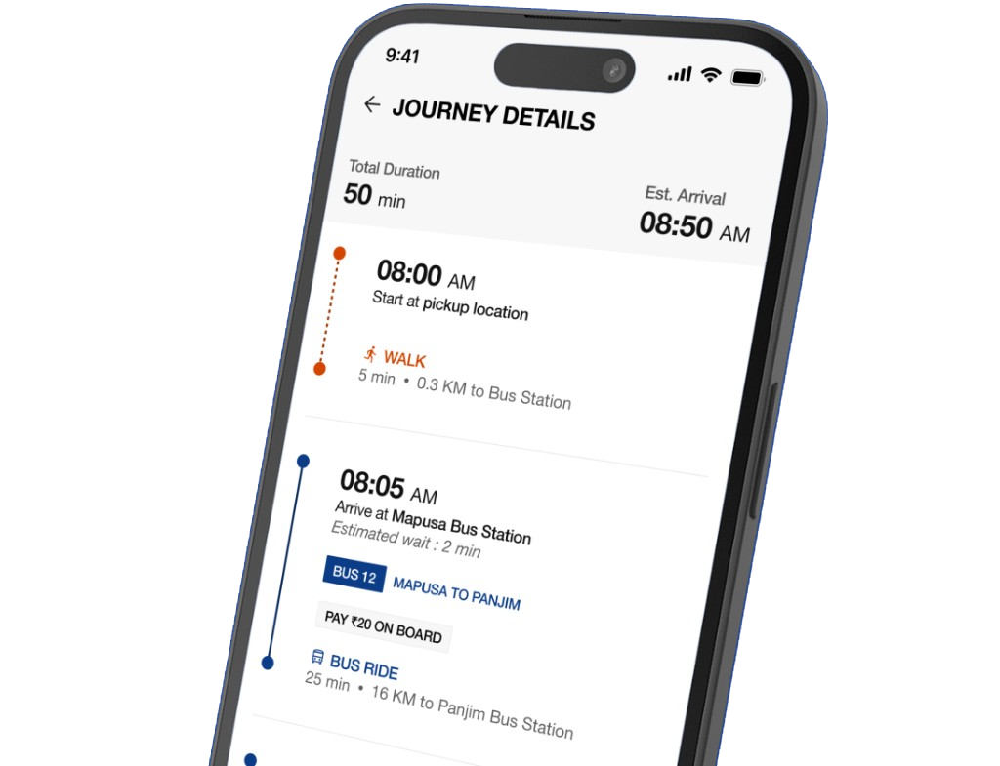
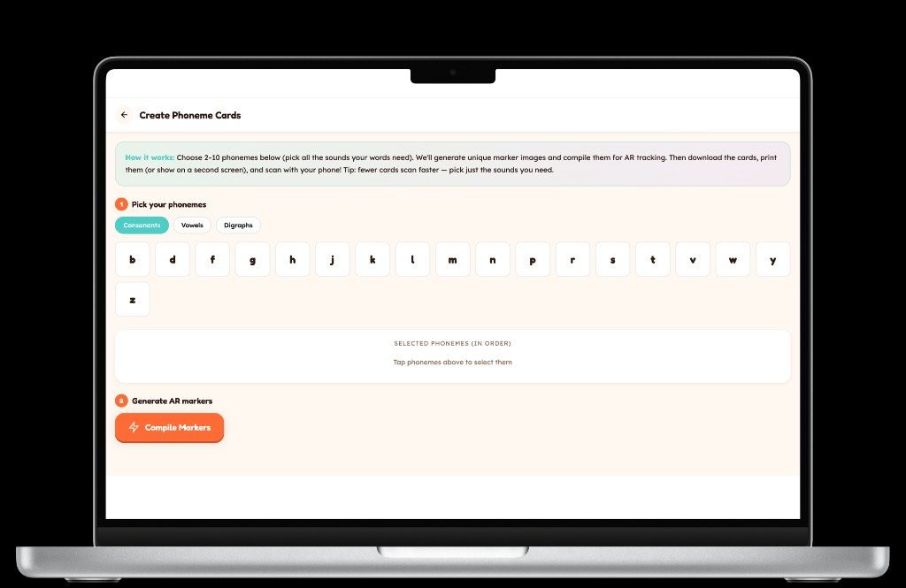
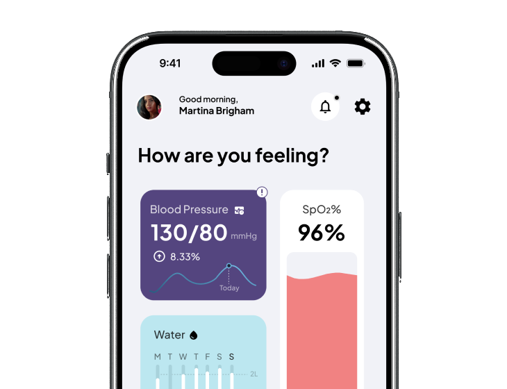

Always observing

Rumours · Fleetwood Mac

Currently: The Brothers Karamazov

Cumulus clouds

PS. this site is best viewed on desktop
A few recent projects across mobile, AR and web.
A full website redesign for a premium coworking campus in Norway. Designed end to end so the site finally matches the space it represents. Live at fomo.no.
An end-to-end mobile system for urban multi-modal commuting. Designed for the journey as a single continuous experience: planning, execution, and disruption.

An AR learning tool built with a special education school, supporting life skills, social interaction, dyslexia reading support and phonics.

A calm, accessible mobile experience that helps older adults and their caregivers stay on top of routines, reminders and shared health updates.

I’m Warren, a UX and product designer based in Goa. I care about building interfaces that look great and are actually easy to use. When I’m not in Figma, you’ll find me cooking, watching Formula 1, reading, or standing outside taking pictures of clouds.